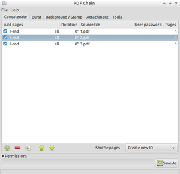
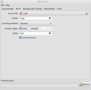
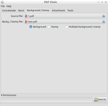
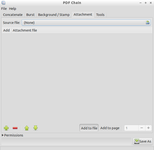
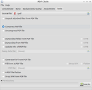
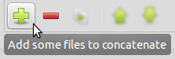
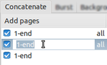
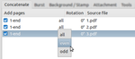
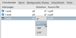
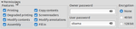

PDF Chain
Dieser Artikel wurde für die folgenden Ubuntu-Versionen getestet:
Ubuntu 16.04 Xenial Xerus
Ubuntu 14.04 Trusty Tahr
Zum Verständnis dieses Artikels sind folgende Seiten hilfreich:
PDF Chain  ist eine grafische Benutzeroberfläche (GUI) für das Kommandozeilenprogramm pdftk (PDF Toolkit). Es bietet mit seiner übersichtlichen und aufgeräumten Oberfläche Unterstützung für alle gebräuchlichen Funktionen von pdftk und kann somit insbesondere bei Nutzern, die mit der Kommandozeile nicht so vertraut sind, die Verwendung vereinfachen. PDF Chain generiert letztlich aus den angegebenen Einstellungen lediglich den konkreten Befehl für PDF Toolkit, weshalb dieses zwingend auf dem Computer installiert sein muss.
ist eine grafische Benutzeroberfläche (GUI) für das Kommandozeilenprogramm pdftk (PDF Toolkit). Es bietet mit seiner übersichtlichen und aufgeräumten Oberfläche Unterstützung für alle gebräuchlichen Funktionen von pdftk und kann somit insbesondere bei Nutzern, die mit der Kommandozeile nicht so vertraut sind, die Verwendung vereinfachen. PDF Chain generiert letztlich aus den angegebenen Einstellungen lediglich den konkreten Befehl für PDF Toolkit, weshalb dieses zwingend auf dem Computer installiert sein muss.
PDF Chain ist in C++ geschrieben und verwendet die gtkmm-Bibliothek. Das Programm ist unter der GNU General Public License (GPLv3) herausgegeben.
Übersicht über die Hauptfunktionen:
Zusammenführen ganzer oder ausgewählter Seiten mehrerer PDF-Dokumente in eine PDF-Datei.
Auswahl von Seiten mit gerader oder ungerader Seitennummer.
Drehen einzelner Seiten und Vertauschen der Seitenreihenfolge.
PDF-Dokumente in einzelne Seiten aufteilen.
Hintergrundwasserzeichen oder Stempel in PDF-Dokumenten anbringen.
Dateien anhängen.
Berechtigungen zu verschiedenen Aktionen setzen.
Passwortschutz erstellen.
Verschlüsselung in verschiedenen Stärken.
Komprimieren.
Editierbare und nicht-editierbare PDF-Formulare.
Metadaten bearbeiten und vieles mehr.

Installation¶
PDF Chain ist in den offiziellen Paketquellen enthalten. Es muss folgendes Paket installiert [1] werden:
pdfchain (universe, grafische Oberfläche)
pdftk (universe, Basiswerkzeug)
 mit apturl
mit apturl
Paketliste zum Kopieren:
sudo apt-get install pdfchain pdftk
sudo aptitude install pdfchain pdftk
Das Programm ist anschließend im Menü unter dem Menüpunkt "Büro" bzw. "Büroprogramme" zugänglich [2].
Bedienung¶
PDF Chain bietet in seinem vollständig in Englisch gehaltenen Programmfenster fünf Reiter, in welche die die vorhandenen Funktionen einsortiert sind:
"Concatenate" (= Zusammenführen)
"Burst" (= Auseinandertrennen)
"Background/Stamp" (= Hintergrund/Stempeln)
"Attachment" (= Anhang)
"Tools" (= Werkzeuge)
Das Programm wird vollständig mit der  -Maustaste bedient, es finden keine Rechtsklick-Kontextmenüs Verwendung. PDF Chain beherrscht kein Drag'n'Drop.
-Maustaste bedient, es finden keine Rechtsklick-Kontextmenüs Verwendung. PDF Chain beherrscht kein Drag'n'Drop.
| Reiter Concatenate (= Zusammenführen) |
|  |
| Reiter Burst (= Auseinandertrennen) |
|  |
| Reiter Background/Stamp (= Hintergrund/Stempeln) |
|  |
| Reiter Attachment (= Anhang) |
|  |
| Reiter Tools (= Werkzeuge) |
Reiter "Concatenate"¶
Hinweis:
Die Bediensymbole können je nach auf dem System verwendetem Symbolthema unterschiedlich aussehen.

Dateien hinzufügen¶
Über das "+"-Symbol (plus) können zu bearbeitende PDF-Dateien hinzugefügt werden. Die auf diese Weise für die Bearbeitung vorgesehenen Dateien erscheinen anschließend im Hauptfeld des Programmfensters.

Dateien kopieren¶
Über das "Kopieren"-Symbol kann ein bereits hinzugefügtes Dokument in der Arbeitsliste ein weiteres Mal aufgeführt werden und somit im Zieldokument mehrfach Verwendung finden.
Dateien entfernen¶
Mithilfe des "-"-Symbols (minus) können nicht benötigte Dateien, nach vorherigem Markieren mithilfe der -Maustaste, auch wieder aus der Arbeitszusammenstellung entfernt werden.
Ändern der Reihenfolge¶
Die Reihenfolge der einzelnen zu verwendenden Dateien, so wie sie im Zieldokument benötigt wird, kann nach Markieren mit der -Maustaste mithilfe der Pfeilsymbole festgelegt werden.

Seitenauswahl¶
Durch -Klick auf den Standardeintrag "1-end" in der Spalte "Add pages" kann festgelegt werden, welche Seiten des jeweiligen Dokuments zur Bearbeitung herangezogen werden sollen.
Es können sowohl Seitenfolgen als auch einzelne Seiten zur Verarbeitung ausgewählt werden. Als Trennzeichen dient das Leerzeichen , Seitenfolgen werden durch den Bindestrich - ohne Abstand zusammengefasst. Seitenfolgen können auch invers (z.B. "end-1") eingetragen und somit rückwärts zusammenfügt werden. Einzelne Seiten als auch Seitenfolgen können mehrfach eingetragen werden und sich überschneiden. Verarbeitet werden Einträge von links nach rechts.
Als Schlüsselworte gibt es "end" und "r" (ab PDF Chain 0.4.0, bzw. PDFtk 1.45). "end" repräsentiert die letzte Seite eines Dokuments. "r" steht für "reverse" (gegenläufig) und zählt die Seiten, von der letzten Seite beginnend, rückwärts nach vorne. So markiert beispielsweise "r2" die vorletzte Seite.
PDF Chain überprüft direkt nach dem Bestätigen der Seitenauswahl die Syntax. Bei fehlerhafter Syntax oder Seitenzahl färbt sich der Text rot, und es wird die weitere Verarbeitung verweigert ("Speichern unter ..."). Die Einfärbung der Textfarbe ist nur im unselektierten Zustand sichtbar.

-Klick auf den Standardeintrag "all" in der selben Spalte öffnet ein kleines Menü, über welches ausgewählt werden kann, ob alle ("all"), lediglich die geraden ("even") oder die ungeraden ("odd") Seiten verwendet werden sollen.
Die Filter "even", "odd" und "all" wirken sich nur auf eingetragene Seitenfolgen aus. Einzeln ausgewählte Seiten bleiben von den Filtern unberührt.

Drehen¶
-Klick auf den Standardeintrag "0°" in der Spalte "Rotation" lässt bestimmen, in welchem Winkel das Dokument gedreht werden soll. Möglich sind Rotationswinkel von 90°, 180° und 270°.
Schalter "Shuffle"¶
Mit dem Schalter Shuffle können die Seiten mehrerer Dokumente gemischt werden. Dies ist beispielsweise beim Zusammenführen von Dokumenten nützlich, bei denen jeweils alle Vorder- und Rückseiten in ein separates Dokument eingescannt wurden. Dabei werden zunächst alle ersten Seiten aller eingetragenen Seitenfolgen nacheinander zusammengefügt, dann alle zweiten Seiten usw.

Berechtigungen, Passwort, Verschlüsselung¶
Im unteren Teil des Progammfensters kann durch Klick auf "Permissions" ein Eingabefeld freigelegt werden, mit welchem Berechtigungen für einzelne Aktionen wie Drucken, Verändern von Inhalten, Ausfüllen von Formularen usw. vergeben werden können. Des Weiteren kann die Zieldatei mit einem Passwort versehen oder in zwei verschiedenen Stärken verschlüsselt werden.
Zieldatei erstellen¶
Nach Eingabe aller gewünschten Optionen wird die Erstellung der zusammengefügten PDF-Datei mittels der Schaltfläche "Save As" ausgelöst.
Reiter "Burst"¶
In diesem Reiter ist es möglich, ein mehrseitiges PDF-Dokument, welches unter "Source file" anzugeben ist, in seine Einzelseiten zu zerlegen.
Die Namen der aufgesplitteten Einzelseiten werden im Feld "Prefix" festgelegt. Unter "Counting method" und "Counting digits" werden die Zählweise und die Anzahl der Stellen beim Seitenzähler festgelegt. Unter "Suffix" lässt sich an die Dateinamen auch noch ein zusätzlicher Namenszusatz anhängen.
Auch in diesem Reiter können im Fensterbereich "Permissions" bei Bedarf Berechtigungen, Passwort oder eine Verschlüsselung festgelegt werden.
Reiter "Background/Stamp"¶
Eine Eingabedatei lässt sich mit einem Hintergrund hinterlegen oder mit einem im Vordergrund liegenden "Stempel" versehen, welcher aus einer zweiten PDF-Datei entnommen wird (Eingabefeld "Backg./Stamp file").
Reiter "Attachment"¶
Über diesen Reiter lässt sich eine Datei an ein PDF-Dokument anhängen.
Reiter "Tools"¶
Alle weiteren Funktionen finden sich in diesem Werkzeug-Reiter. So lassen sich beispielsweise
an ein PDF-Dokument angehängte Dateien auspacken,
eine PDF-Datei komprimieren oder dekomprimieren,
Metadaten zu PDF-Dateien oder Formularfeldern eines PDF-Dokuments bearbeiten bzw. abspeichern,
aus einem PDF-Dokument eine Datei im FDF-Format erzeugen, mit welcher sich Formulare ausfüllen lassen,
die Editierbarkeit oder Nicht-Editierbarkeit von Formularen festlegen (Option "flatten") und mehr.
 Programmübersicht
Programmübersicht- Erstellt mit Inyoka
-
 2004 – 2017 ubuntuusers.de • Einige Rechte vorbehalten
2004 – 2017 ubuntuusers.de • Einige Rechte vorbehalten
Lizenz • Kontakt • Datenschutz • Impressum • Serverstatus -
Serverhousing gespendet von